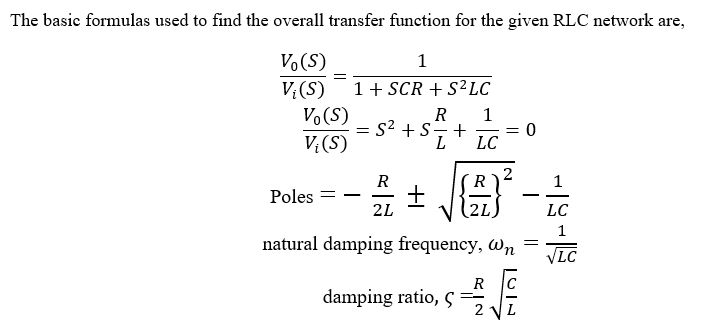
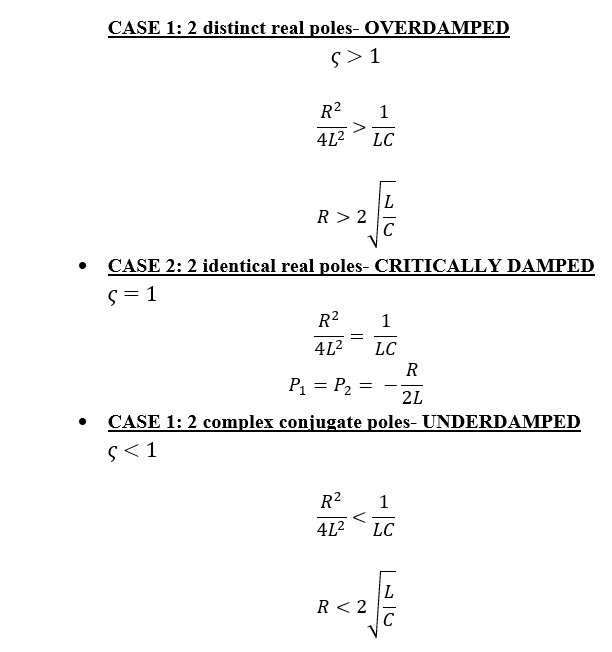

The overall transfer function of the given electrical network with passive components whichare connected in parallel or cascade is obtained. By substituting the values for the passive elements the transfer function for the particular values of passive components is derived using Laplace transformation. To study the output voltage across the given network and current through the circuit the passive elements values are varied. The nature of the time response for the various values of passive components also obtained to observe how the responses for different systems are changing.
The problem statement is the overall transfer function of the given electrical network with passive components whichare connected in parallel or cascade is obtained. Following with calculate the transfer function, with help of equations required for analyzing the transfer function and time response of the selected electric circuit. Then calculate current, voltage and transfer function of the series and parallel RLC network. We have check modifications in current, voltage after deriving the transfer function for the selected electric network by changing the parameters values such as resistor inductor and capacitor.
 